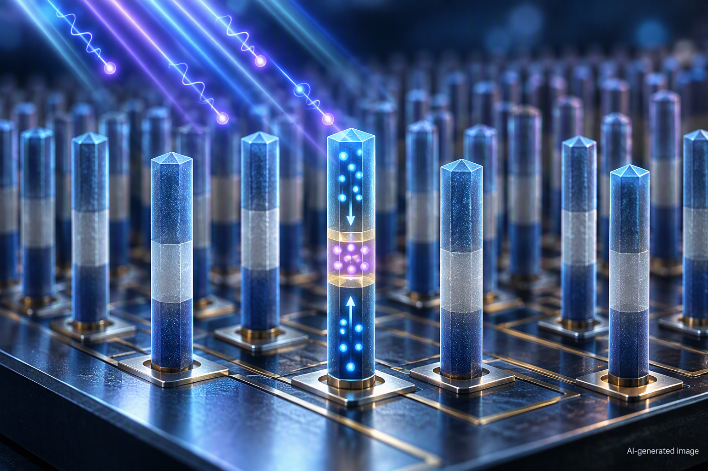

Μία δίοδος που βλέπει, θυμάται και επεξεργάζεται εικόνες
Μια νέα δίοδος από νανοσύρματα συνδυάζει φωτοανίχνευση, μνήμη και επεξεργασία στην ίδια ηλεκτρονική διάταξη, ανοίγοντας τον δρόμο για απλούστερους αισθητήρες εικόνας που λειτουργούν περισσότερο σαν τεχνητά νευρωνικά συστήματα.

Οι ψηφιακές κάμερες μετατρέπουν το φως σε ηλεκτρικά σήματα, αλλά η επεξεργασία των εικόνων πραγματοποιείται συνήθως σε διαφορετικά κυκλώματα από εκείνα που τις καταγράφουν. Τα δεδομένα πρέπει να μεταφερθούν από τον αισθητήρα στη μνήμη και κατόπιν στον επεξεργαστή, μια διαδικασία που αυξάνει την πολυπλοκότητα και την κατανάλωση ενέργειας. Η νευρομορφική ηλεκτρονική προσπαθεί να περιορίσει αυτόν τον διαχωρισμό, δημιουργώντας διατάξεις που μιμούνται ορισμένες λειτουργικές αρχές του νευρικού συστήματος. Ένας νευρομορφικός αισθητήρας δεν καταγράφει απλώς την ένταση του φωτός, αλλά μπορεί να διατηρεί προσωρινά πληροφορίες και να εκτελεί βασικά βήματα επεξεργασίας κοντά στο σημείο της ανίχνευσης. Το βασικό ερώτημα είναι αν αυτές οι λειτουργίες μπορούν να ενσωματωθούν σε μια απλή ηλεκτρονική διάταξη, χωρίς πρόσθετα τρανζίστορ, πολύπλοκα κυκλώματα και ξεχωριστά στοιχεία μνήμης.
Οι ερευνητές κατασκεύασαν μια δίοδο δύο ακροδεκτών από κατακόρυφα νανοσύρματα, τα οποία αναπτύχθηκαν πάνω σε υπόστρωμα πυριτίου και αποτελούνται διαδοχικά από p-GaN, n-AlGaN και n-GaN. Το GaN είναι νιτρίδιο του γαλλίου, ενώ το AlGaN είναι κράμα νιτριδίου του αργιλίου και του γαλλίου. Επειδή το τμήμα AlGaN διαθέτει μεγαλύτερο ενεργειακό χάσμα, δηλαδή μεγαλύτερη ενεργειακή απόσταση ανάμεσα στις καταστάσεις των ηλεκτρονίων, σχηματίζεται μέσα στη δίοδο μια περιοχή που λειτουργεί ως δεξαμενή ηλεκτρονίων. Με την εφαρμογή κατάλληλης ηλεκτρικής πόλωσης, τα ηλεκτρόνια μπορούν να παγιδεύονται ή να απελευθερώνονται από αυτή την περιοχή. Έτσι, η ίδια διάταξη αποκτά διαφορετική απόκριση στο φως και μπορεί να διατηρεί πληροφορία από προηγούμενους φωτεινούς παλμούς. Η δίοδος παρουσίασε φωτοαπόκριση 10,45 mA/W, διευκόλυνση ζεύγους παλμών έως 122% και οκτώ διακριτές, περίπου γραμμικές καταστάσεις φωτομνήμης. Η διευκόλυνση ζεύγους παλμών σημαίνει ότι η απόκριση στον δεύτερο από δύο κοντινούς φωτεινούς παλμούς ενισχύεται, όπως συμβαίνει σε ορισμένες βραχυπρόθεσμες συνάψεις.
Η ενσωμάτωση φωτοανίχνευσης, μνήμης και επεξεργασίας σε μία μόνο δίοδο περιορίζει την ανάγκη συνεχούς μεταφοράς δεδομένων μεταξύ διαφορετικών μονάδων. Οι ερευνητές χρησιμοποίησαν συστοιχίες των διατάξεων για να επιδείξουν αφαίρεση οπτικού θορύβου και ταξινόμηση εικόνων χωρίς πρόσθετα κυκλώματα επεξεργασίας. Το σημαντικό στοιχείο δεν είναι μόνο ότι η δίοδος εκτελεί τρεις λειτουργίες, αλλά ότι οι λειτουργίες προκύπτουν από τον έλεγχο της κίνησης και της παγίδευσης ηλεκτρονίων μέσα στην ίδια κατακόρυφη δομή. Η προσέγγιση θα μπορούσε να συμβάλει στην ανάπτυξη πιο συμπαγών αισθητήρων για μηχανική όραση, ρομποτικά συστήματα και συσκευές που χρειάζεται να επεξεργάζονται οπτικές πληροφορίες με μικρή καθυστέρηση. Ωστόσο, πρόκειται ακόμη για πειραματική επίδειξη μιας αρχιτεκτονικής νανοδιατάξεων. Η επίδοσή της πρέπει να αξιολογηθεί σε μεγαλύτερες συστοιχίες, με πιο σύνθετες εικόνες και υπό πραγματικές συνθήκες λειτουργίας. Ζητήματα όπως η ομοιομορφία των νανοσυρμάτων, η σταθερότητα των καταστάσεων μνήμης και η δυνατότητα μαζικής κατασκευής θα καθορίσουν αν η τεχνολογία μπορεί να περάσει από το εργαστήριο σε πρακτικά συστήματα. Δείτε την πρωτότυπη επιστημονική δημοσίευση.